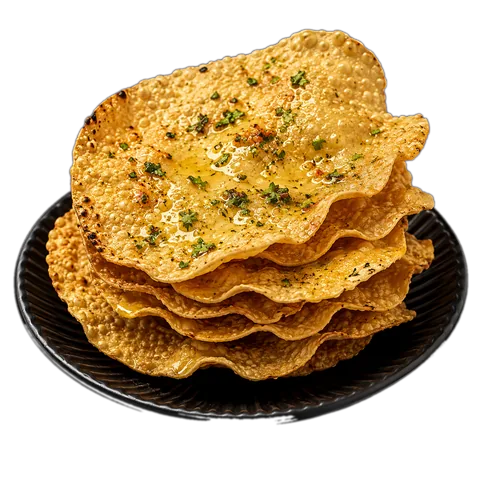
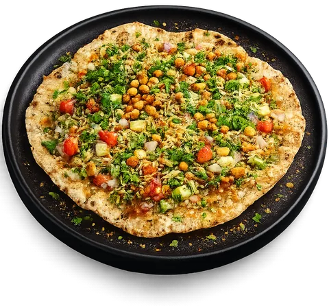
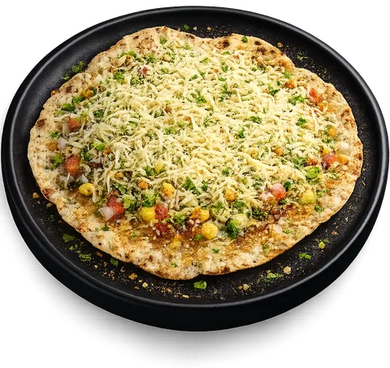

Register & Get Updates.
Takes 10 seconds. We'll remember you next time you visit.
❤️ How was your TKG experience?
Your feedback helps us improve every weekend.
🍽️ Not sure what to order?
2 quick taps and we'll pick for you.
Gravy to dip, or crispy & dry?
Love extra cheese?
Here's your pick 👇
❤️ We'd love to remember your taste.
Would you like us to save your taste profile?
🔥 Khichiya Runner
Jump the Khichiya over the coal — miss one and it burns!
You're in control.
Next, your browser will ask if TKG can use your location — that choice is entirely yours. We only use it to understand which areas our customers visit us from, so we can serve you better. Whichever you choose, Allow or Don't Allow, you'll continue straight to the menu right after.
You'll reach the menu right after you make your choice.
Quick, before you go
So we can thank you properly — then straight to Google.



Dip. Scoop. Enjoy.